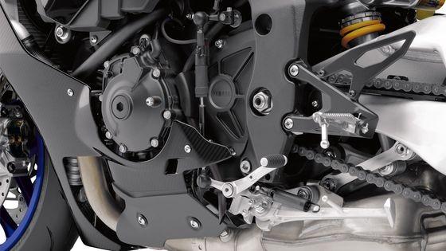

Quick Shift System (QSS) входит в базовую комплектацию Yamaha YZF-R1M и позволяет переключать передачи без выжима сцепления – причем как вниз, так и вверх – помогая сократить время круга и уменьшить усталость пилота.